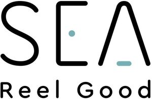

Trade Mark Journal No.2025/030 25 July 2025
WO0000001863589 (6,20,37,42)
Office of origin: European Union Intellectual Property Office (EUIPO)
Date of International Registration:14 May 2025
Date of designation in the UK:
14 May 2025

The mark contains the colours black and light blue.
- Class 6
- Transport reels of metal; winding reels (reels of metal); metal pallets.
- Class 20
- Winding reels (other than metal and mechanical) for pipes, cables and wires; reels (non-metallic -) [other than parts of machines or apparatus]; transport pallets, not of metal; non-metallic transport reels.
- Class 37
- Installation of industrial machinery; assembling of machinery; repair and maintenance of machinery; renovation services related to steel reels.
- Class 42
- Electrical engineering services; engineering services for the design of machinery; quality control testing services for industrial machinery; inspection of apparatus and equipment; design of industrial machinery; programming of electronic control systems; material testing services; industrial analysis services; engineering design and consultancy; technical inspection services; quality testing of products for certification purposes; development of software designed to control machines, production lines and technological units.
SEA Enterprises a.s.
Representative: PATENTENTER S.R.O., Koliště 13a, CZ-602 00 Brno, CZECHIA